SMOKE / PIPELINE CHECK ONLY — full scientific study not run
Small-replication smoke outputs check implementation and reporting. They do not establish superiority, tail reliability, or asymptotic constants.
176 unique simulated trajectories; 352 analysis memberships. Reused reward/joint endpoints are counted once as simulations.
Every coverage, incorrect-label, and empty-intersection path is retained. Execution failures are separate from these scientific flags. Cohorts and source groups remain separate. Means weight environmental cells equally; reported SEs are stratified Monte Carlo SEs. Paired differences are left minus right. Bonferroni families are defined by cohort, group, suite, and metric; subgroup intervals are descriptive.
Complete tables, comparator contrasts, subgroup summaries, diagnostics, and figure captions are supplied as CSV files alongside this report.
Figures
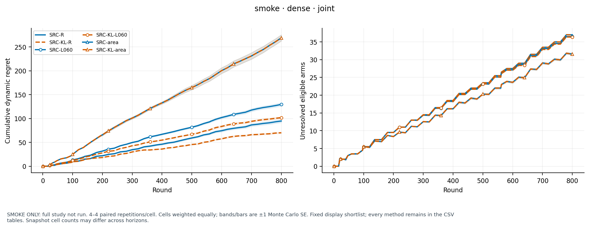
SMOKE ONLY: full study not run. 4–4 paired repetitions/cell. Cells weighted equally; bands/bars are ±1 Monte Carlo SE. Fixed display shortlist; every method remains in the CSV tables. Snapshot cell counts may differ across horizons.
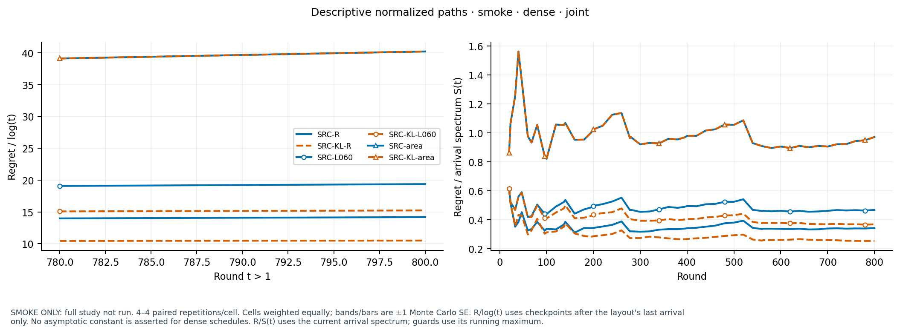
SMOKE ONLY: full study not run. 4–4 paired repetitions/cell. Cells weighted equally; bands/bars are ±1 Monte Carlo SE. R/log(t) uses checkpoints after the layout's last arrival only. No asymptotic constant is asserted for dense schedules. R/S(t) uses the current arrival spectrum; guards use its running maximum.
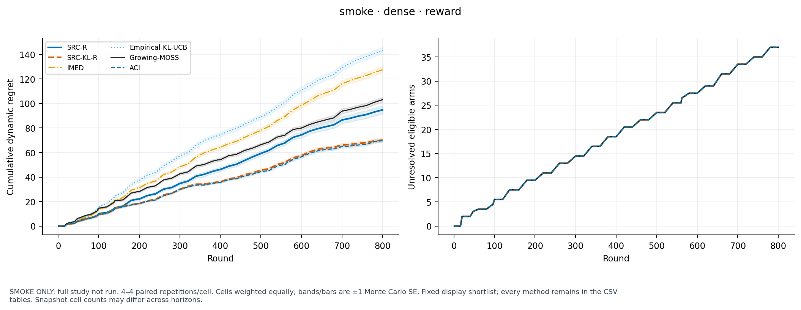
SMOKE ONLY: full study not run. 4–4 paired repetitions/cell. Cells weighted equally; bands/bars are ±1 Monte Carlo SE. Fixed display shortlist; every method remains in the CSV tables. Snapshot cell counts may differ across horizons.
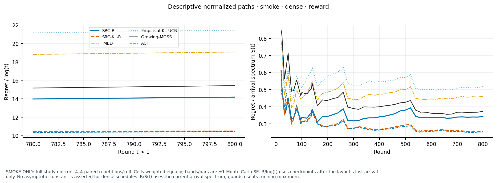
SMOKE ONLY: full study not run. 4–4 paired repetitions/cell. Cells weighted equally; bands/bars are ±1 Monte Carlo SE. R/log(t) uses checkpoints after the layout's last arrival only. No asymptotic constant is asserted for dense schedules. R/S(t) uses the current arrival spectrum; guards use its running maximum.
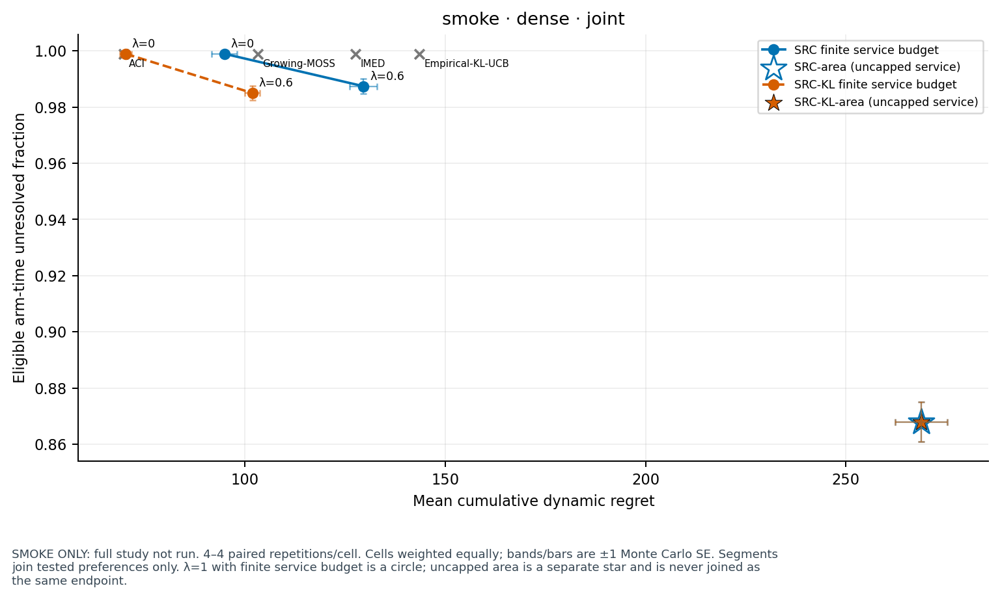
SMOKE ONLY: full study not run. 4–4 paired repetitions/cell. Cells weighted equally; bands/bars are ±1 Monte Carlo SE. Segments join tested preferences only. λ=1 with finite service budget is a circle; uncapped area is a separate star and is never joined as the same endpoint.
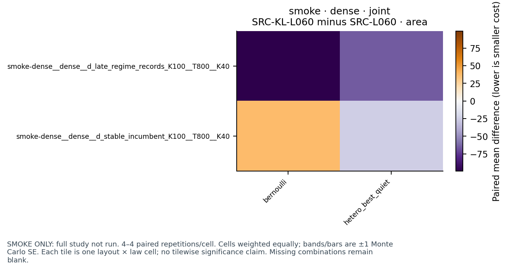
SMOKE ONLY: full study not run. 4–4 paired repetitions/cell. Cells weighted equally; bands/bars are ±1 Monte Carlo SE. Each tile is one layout × law cell; no tilewise significance claim. Missing combinations remain blank.SMOKE ONLY: full study not run. 4–4 paired repetitions/cell. Cells weighted equally; bands/bars are ±1 Monte Carlo SE. Each tile is one layout × law cell; no tilewise significance claim. Missing combinations remain blank.
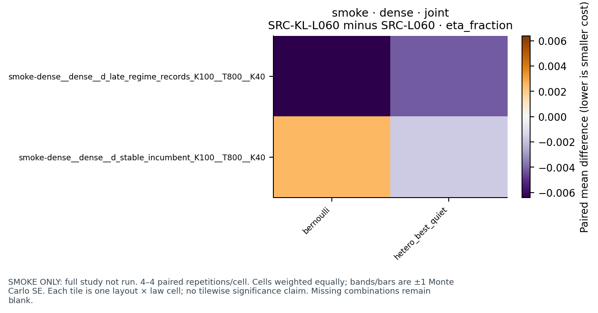
SMOKE ONLY: full study not run. 4–4 paired repetitions/cell. Cells weighted equally; bands/bars are ±1 Monte Carlo SE. Each tile is one layout × law cell; no tilewise significance claim. Missing combinations remain blank.
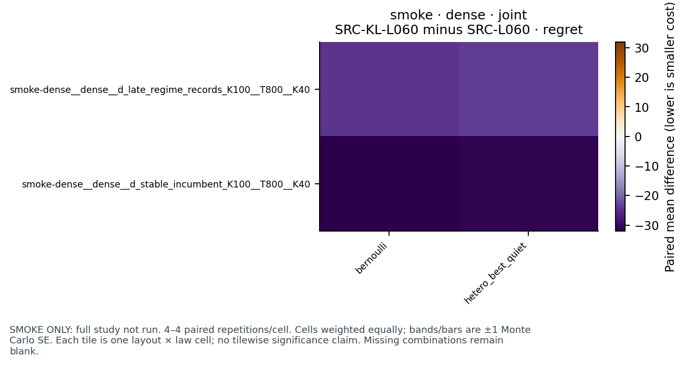
SMOKE ONLY: full study not run. 4–4 paired repetitions/cell. Cells weighted equally; bands/bars are ±1 Monte Carlo SE. Each tile is one layout × law cell; no tilewise significance claim. Missing combinations remain blank.
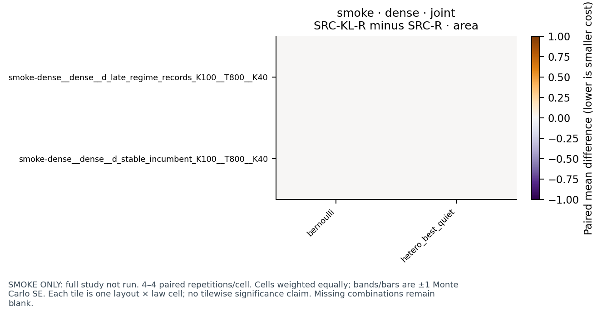
SMOKE ONLY: full study not run. 4–4 paired repetitions/cell. Cells weighted equally; bands/bars are ±1 Monte Carlo SE. Each tile is one layout × law cell; no tilewise significance claim. Missing combinations remain blank.SMOKE ONLY: full study not run. 4–4 paired repetitions/cell. Cells weighted equally; bands/bars are ±1 Monte Carlo SE. Each tile is one layout × law cell; no tilewise significance claim. Missing combinations remain blank.SMOKE ONLY: full study not run. 4–4 paired repetitions/cell. Cells weighted equally; bands/bars are ±1 Monte Carlo SE. Each tile is one layout × law cell; no tilewise significance claim. Missing combinations remain blank.SMOKE ONLY: full study not run. 4–4 paired repetitions/cell. Cells weighted equally; bands/bars are ±1 Monte Carlo SE. Each tile is one layout × law cell; no tilewise significance claim. Missing combinations remain blank.
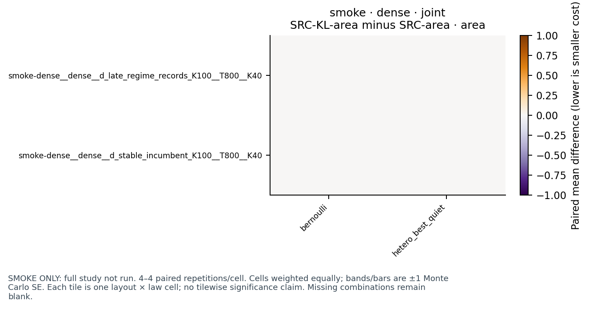
SMOKE ONLY: full study not run. 4–4 paired repetitions/cell. Cells weighted equally; bands/bars are ±1 Monte Carlo SE. Each tile is one layout × law cell; no tilewise significance claim. Missing combinations remain blank.
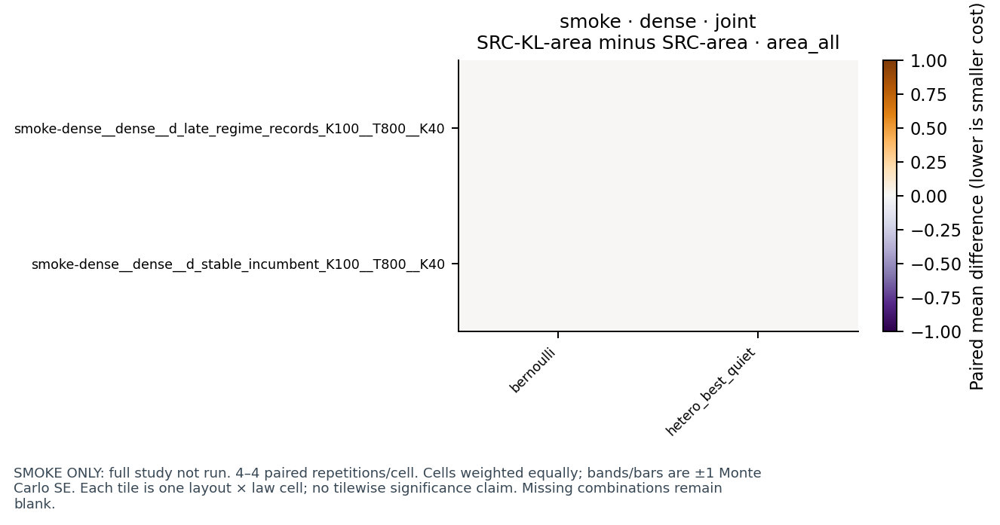
SMOKE ONLY: full study not run. 4–4 paired repetitions/cell. Cells weighted equally; bands/bars are ±1 Monte Carlo SE. Each tile is one layout × law cell; no tilewise significance claim. Missing combinations remain blank.SMOKE ONLY: full study not run. 4–4 paired repetitions/cell. Cells weighted equally; bands/bars are ±1 Monte Carlo SE. Each tile is one layout × law cell; no tilewise significance claim. Missing combinations remain blank.SMOKE ONLY: full study not run. 4–4 paired repetitions/cell. Cells weighted equally; bands/bars are ±1 Monte Carlo SE. Each tile is one layout × law cell; no tilewise significance claim. Missing combinations remain blank.SMOKE ONLY: full study not run. 4–4 paired repetitions/cell. Cells weighted equally; bands/bars are ±1 Monte Carlo SE. Each tile is one layout × law cell; no tilewise significance claim. Missing combinations remain blank.
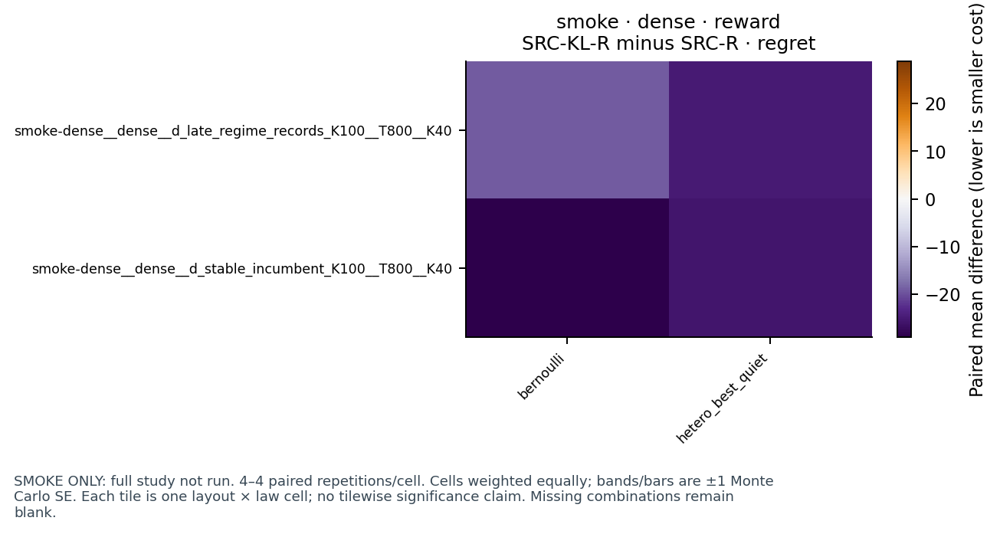
SMOKE ONLY: full study not run. 4–4 paired repetitions/cell. Cells weighted equally; bands/bars are ±1 Monte Carlo SE. Each tile is one layout × law cell; no tilewise significance claim. Missing combinations remain blank.SMOKE ONLY: full study not run. 4–4 paired repetitions/cell. Cells weighted equally; bands/bars are ±1 Monte Carlo SE. Each tile is one layout × law cell; no tilewise significance claim. Missing combinations remain blank.SMOKE ONLY: full study not run. 4–4 paired repetitions/cell. Cells weighted equally; bands/bars are ±1 Monte Carlo SE. Law/density summaries are conditional on the fixed suite, with cohorts and source groups separate.
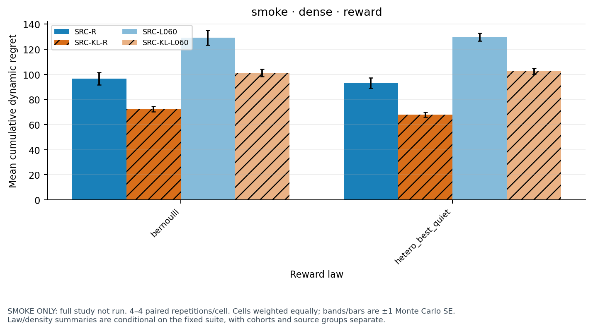
SMOKE ONLY: full study not run. 4–4 paired repetitions/cell. Cells weighted equally; bands/bars are ±1 Monte Carlo SE. Law/density summaries are conditional on the fixed suite, with cohorts and source groups separate.
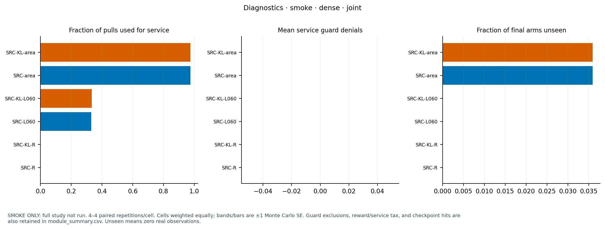
SMOKE ONLY: full study not run. 4–4 paired repetitions/cell. Cells weighted equally; bands/bars are ±1 Monte Carlo SE. Guard exclusions, reward/service tax, and checkpoint hits are also retained in module_summary.csv. Unseen means zero real observations.
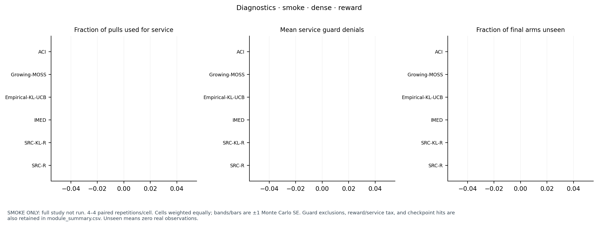
SMOKE ONLY: full study not run. 4–4 paired repetitions/cell. Cells weighted equally; bands/bars are ±1 Monte Carlo SE. Guard exclusions, reward/service tax, and checkpoint hits are also retained in module_summary.csv. Unseen means zero real observations.